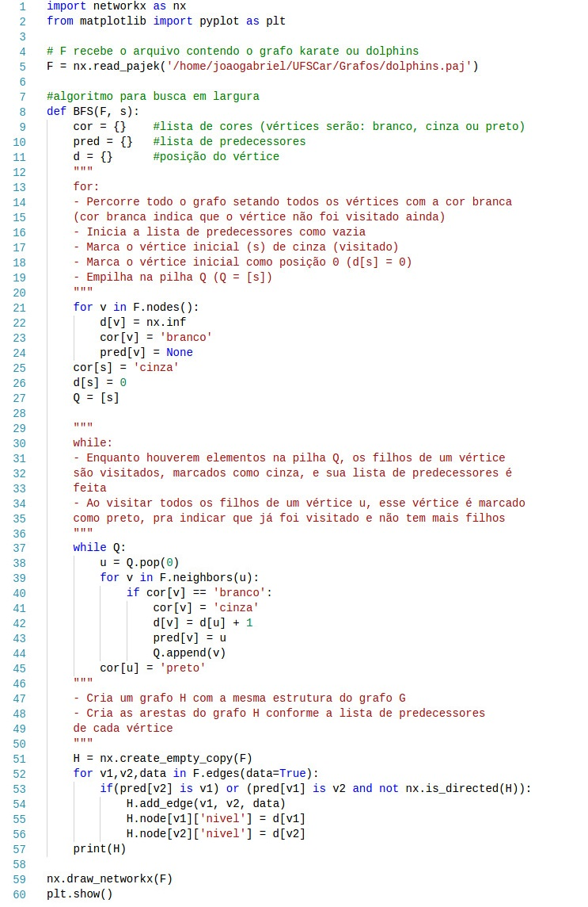
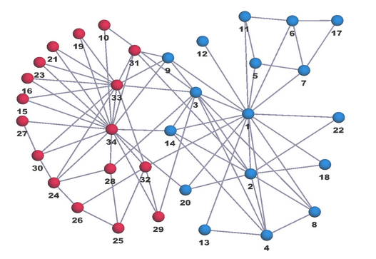
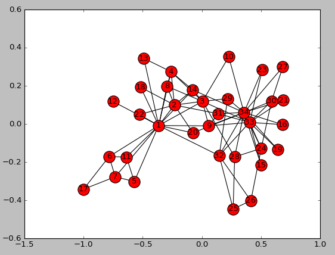
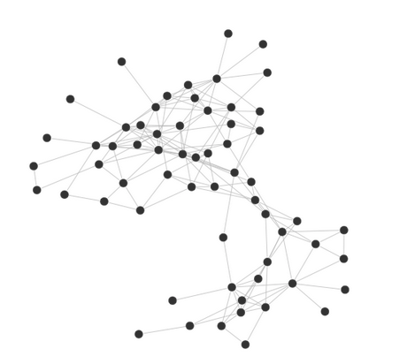
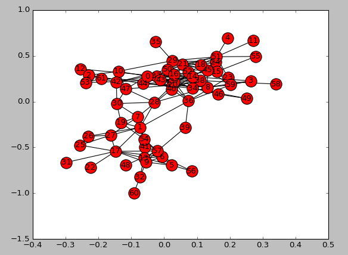
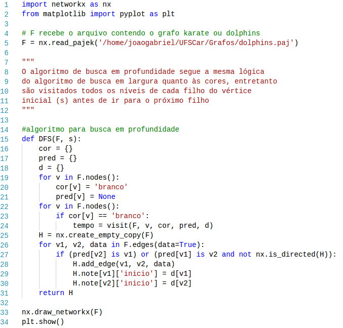
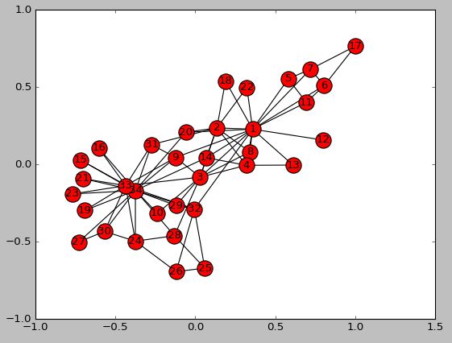
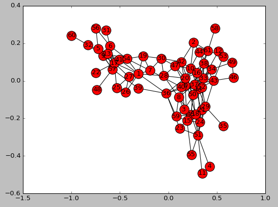

Trataremos aqui a implementação dos algoritmos de busca em largura (BFS) e busca em profundidade (DFS) para a geração das árvores bfs-tree e dfs-tree.
Os algoritmos foram desenvolvidos em python, utilizando as bibliotecas networkx e matplotlib para auxílio do tratamento dos grafos e para a representação gráfica. Os grafos utilizados foram karate e dolphins, importados no código através do comando F = nx.read_pajek('"caminho"/arquivo.paj'), em que "caminho" é o caminho até o diretório onde estão salvos os arquivos karate.paj e dolphins.paj e "arquivo" é karate ou dolphins. O grafo do arquivo karate possui 34 vértices e o grafo dolphins possui 62 vértices
Os arquivos dos grafos podem ser obtidos em: karate.paj e dolphins.paj
Começaremos com a implementação do algoritmo de busca em largura (BFS), aplicaremos esse algoritmo para os dois grafos e, após isso, faremos o mesmo para o algoritmo de busca em profundidade (DFS).
O esquema de coloração dos vértices foi o mesmo para os dois algoritmos: todos os vértices iniciam com a cor branca, mostrando que são vértices não visitados. Quando eles são visitados, recebem a cor cinza e a partir do momento que já estiverem sido visitados e não possuírem mais filhos para seguir com o algoritmo, são removidos da fila (no caso do BFS) ou da pilha (no caso do DFS) e recebem a cor preta.
Busca em Largura (BFS)
O algoritmo de busca em largura inicia sua busca em um vértice inicial s. Após isso, todos os vértices vizinhos de s são visitados. Depois todos os vértices que estão a duas arestas de distância do vértice s, e assim por diante, até que todos os vértices tenham sido visitados.
Para o controle dos vértices a serem visitados, o algoritmo BFS utiliza uma estrutura de fila (First In Last Out). A cada vértice visitado, seus filhos são adicionados na fila e visitados em sequência, repetindo o processo até que não haja mais vértice não visitado.
A função BFS() deve receber como parâmetro o grafo (G) a ser tratado e o vértice inicial (s)
O código implementado em python foi o da imagem abaixo. Ele contém comentários explicando cada parte da implementação do algoritmo.
O grafo descrito pelo arquivo karate.paj é o grafo da imagem a seguir.
Esse grafo é importado na linha 5 do cógido e passa, então, pelo procedimento de busca em largura. Com esse procedimento, é possível obtermos o grafo bfs-tree, que é criado a partir da análise dos predecessores de cada vértice do grafo. A bfs-tree do grafo karate é mostrado na imagem abaixo.
Em seguida, o mesmo procedimento foi feito para o grafo descrito pelo arquivo dolphins.paj. O grafo que será trabalhado agora, é o grafo da imagem a seguir.
Por fim, o grafo dolphins foi processado gerando a bfs-tree da imagem abaixo.
Busca em Profundidade (DFS)
Agora, realizaremos os mesmos procedimentos porém utilizando o algoritmo de busca em profundidade.
O algoritmo DFS visita todos os níveis de cada filho do vértice inicial antes de partir para o próximo filho. Ao contrário da busca em largura que analisa todos os filhos de um nível antes de partir para o próximo nível.
Para o controle da ordem de visitação dos vértices, o DFS utiliza uma estrutura de pilha (First In First Out), adicionando à pilha todos os filhos de cada vértice, visitando-os em sequência e removendo-os da pilha após terem sido visitados e não possuírem mais filhos.
A imagem abaixo mostra o código desenvolvido em python para a busca em profundidade. O código possui comentários que facilitam sua compreensão.
Inicialmente, o grafo karate foi importado e a dfs-tree gerada pelo algoritmo é mostrada na imagem abaixo.
Em seguida, foi feito o mesmo procedimento para o grafo dolphins e a dfs-tree resultante é mostrada na imagem a seguir.
